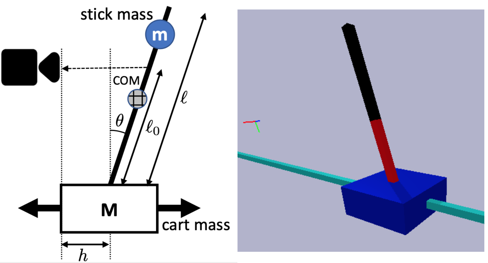

How Are Learned Perception-Based Controllers Impacted by the Limits of Robust Control?
Abstract: The difficulty of optimal control problems has classically been characterized in terms of system properties such as minimum eigenvalues of controllability/observability gramians. We revisit these characterizations in the context of the increasing popularity of data-driven techniques like reinforcement learning (RL), and in control settings where input observations are high-dimensional images and transition dynamics are unknown. Specifically, we ask: to what extent are quantifiable control and perceptual difficulty metrics of a task predictive of the performance and sample complexity of data-driven controllers? We modulate two different types of partial observability in a cartpole "stick-balancing" problem -- (i) the height of one visible fixation point on the cartpole, which can be used to tune fundamental limits of performance achievable by any controller, and by (ii) the level of perception noise in the fixation point position inferred from depth or RGB images of the cartpole. In these settings, we empirically study two popular families of controllers: RL and system identification-based H infinity control, using visually estimated system state. Our results show that the fundamental limits of robust control have corresponding implications for the sample-efficiency and performance of learned perception-based controllers.
Paper
Latest version: arXiv
Code
Code and instructions: Github
Team

Acknowledgements
We thank Natalie Bernat and John C. Doyle for helpful feedback and comments.
Contact
If you have any questions, please feel free to contact Jingxi Xu